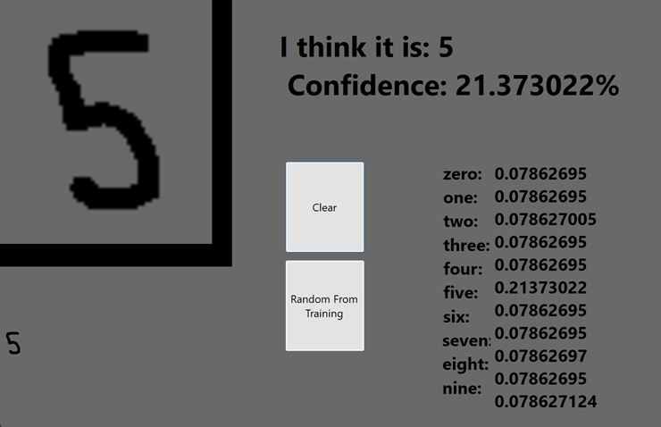
Digit Recognition AI
A multilayer perceptron trained to recognize handwritten digits. The network and training data was all done from scratch. A Windows Forms app was also made to record over 1200 training images.

A multilayer perceptron trained to recognize handwritten digits. The network and training data was all done from scratch. A Windows Forms app was also made to record over 1200 training images.
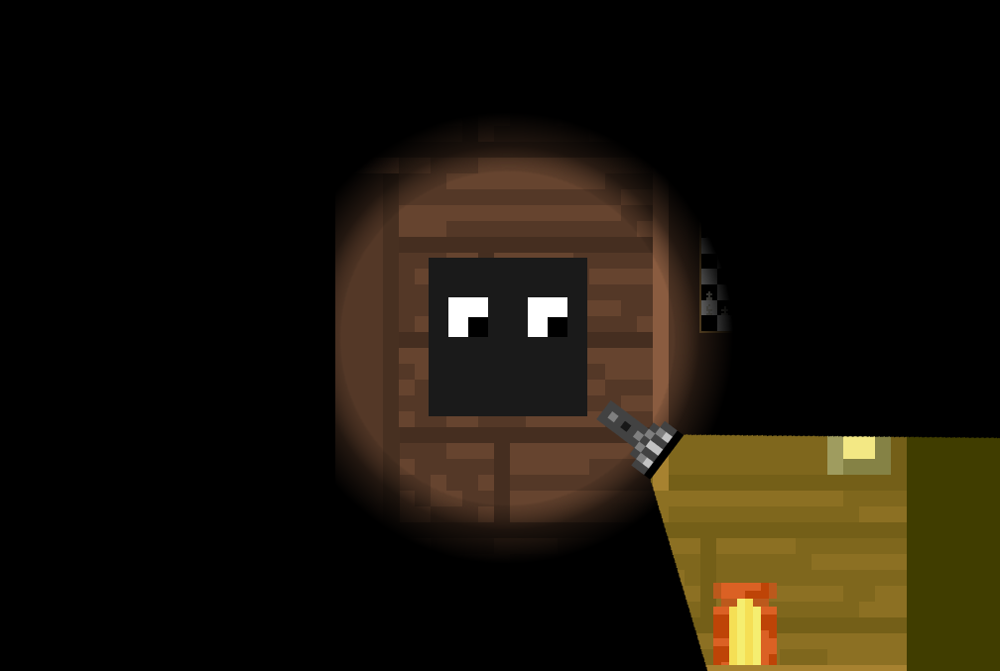
A short game using Winforms where you search a haunted house for the exit. You need to pick up various items to progress through the game.
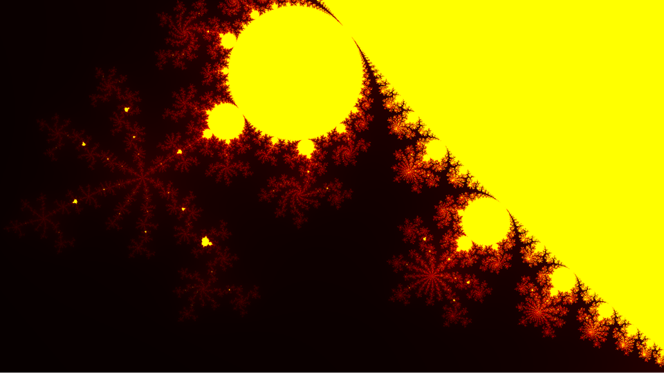
A laggy CPU side Mandelbrot set renderer. Pretty.
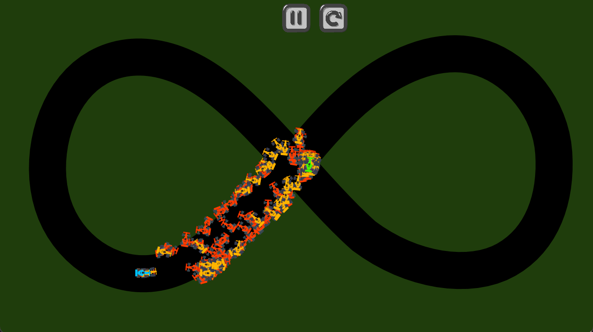
A fun AI demo where you can watch AIs train to become better at racing. The neural network was made from scratch.
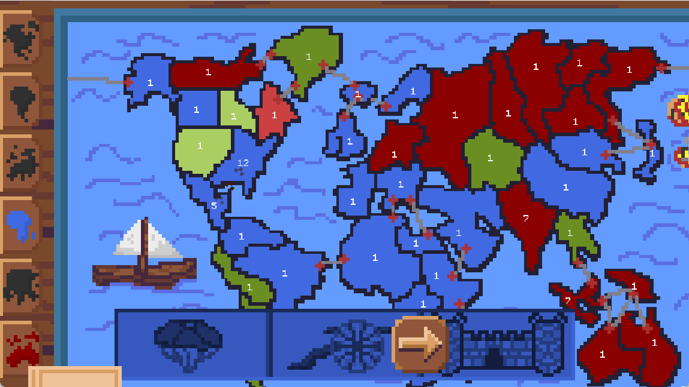
A (buggy) online multiplayer risk clone made with @pathehir (github). Supports all the risk features like territory cards and plenty of graphical and auditory juice!
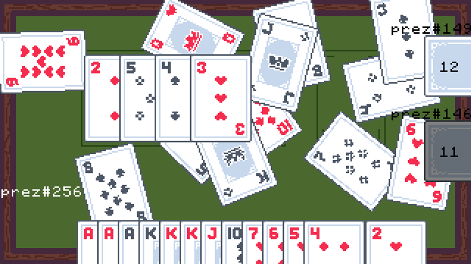
The card game Presidents in online multiplayer.
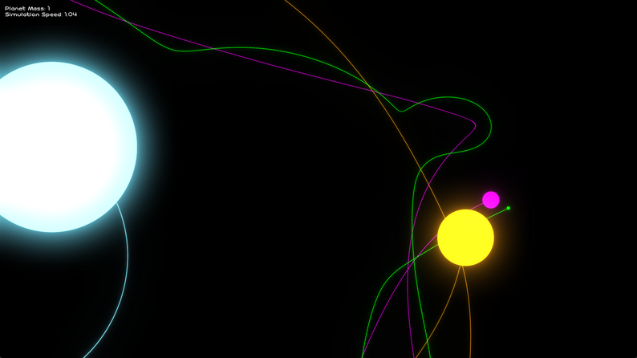
A satisfying gravity simulation. The bloom effect is by @Kosmonaut3d (github).
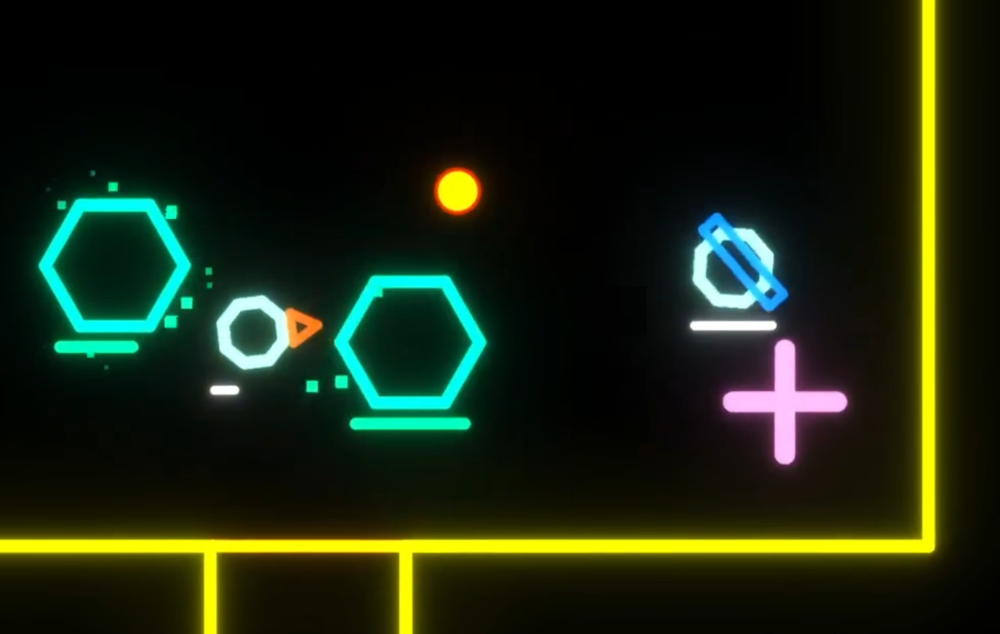
A roguelike bullet hell game with glowy colors.
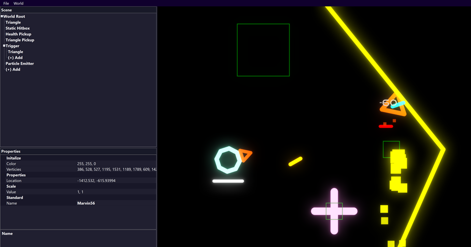
An editor for a roguelike bullet hell game with glowy colors.
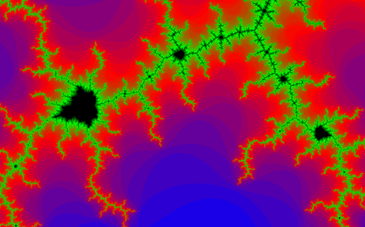
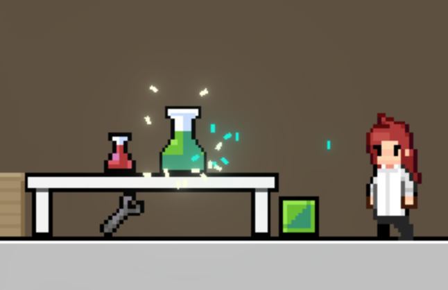
Made with @MareCochlea and @salamander1983 (github). Submission to the 2024 GMTK game jam.
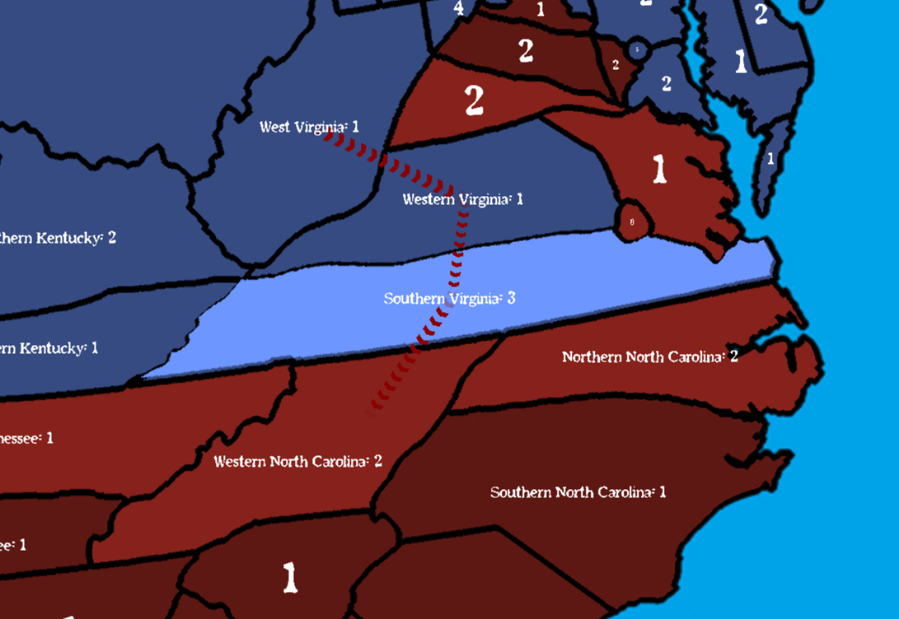
Project for my AP US History class. Risk inspired game that takes place during the Civil War.
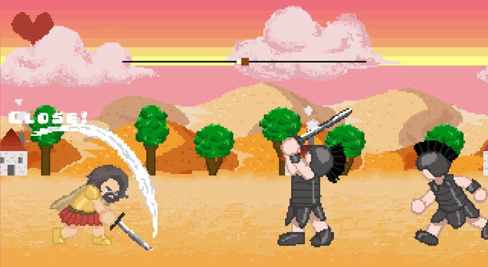
1st place submission to a hackathon. A small hack and slash game, and was programmed in 4 hours. Art done by a friend.
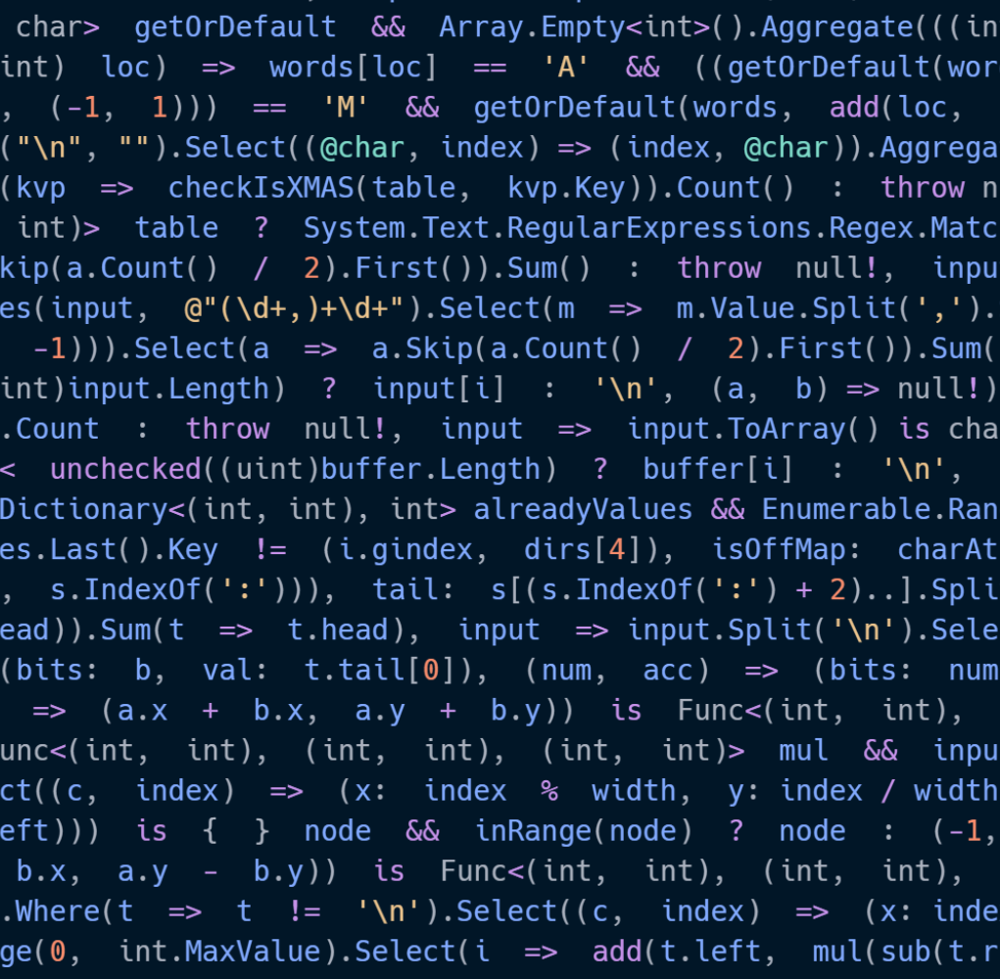
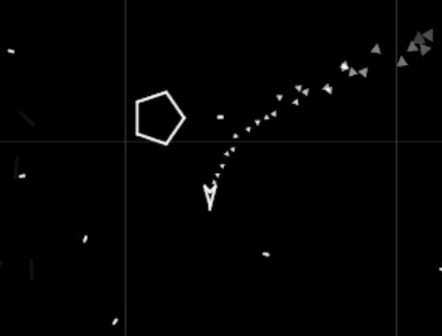
A first of a kind high performance ECS/ECF, with built in lifetime management, component events, and more. Culmination of over a year of research, experimentation, and failed projects.
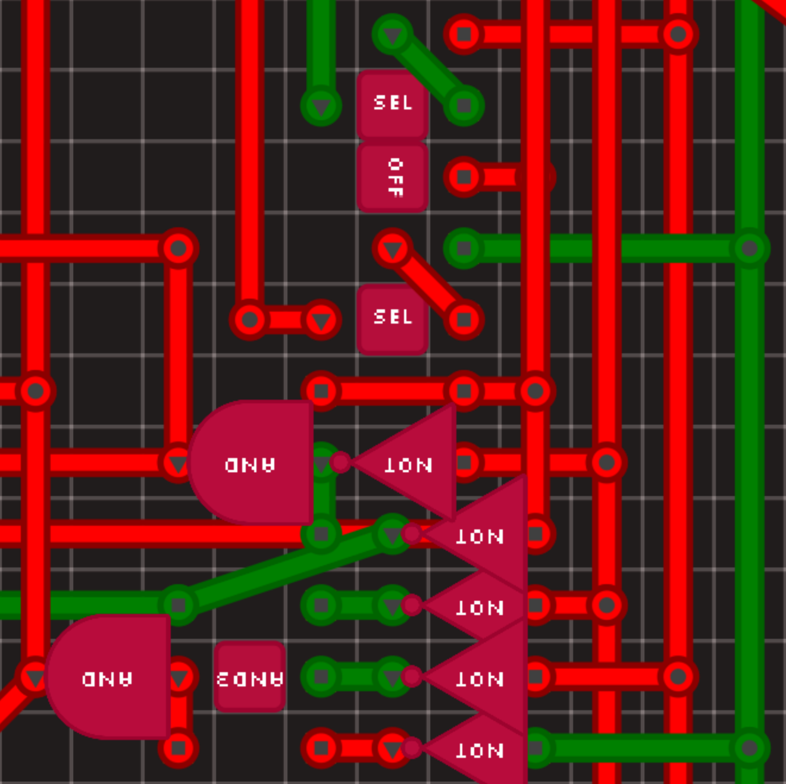
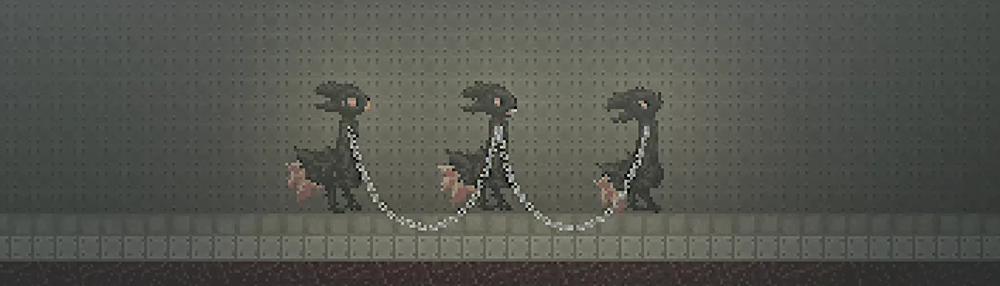
A mod for Casualties Unknown that lets you chain yourself to other players.